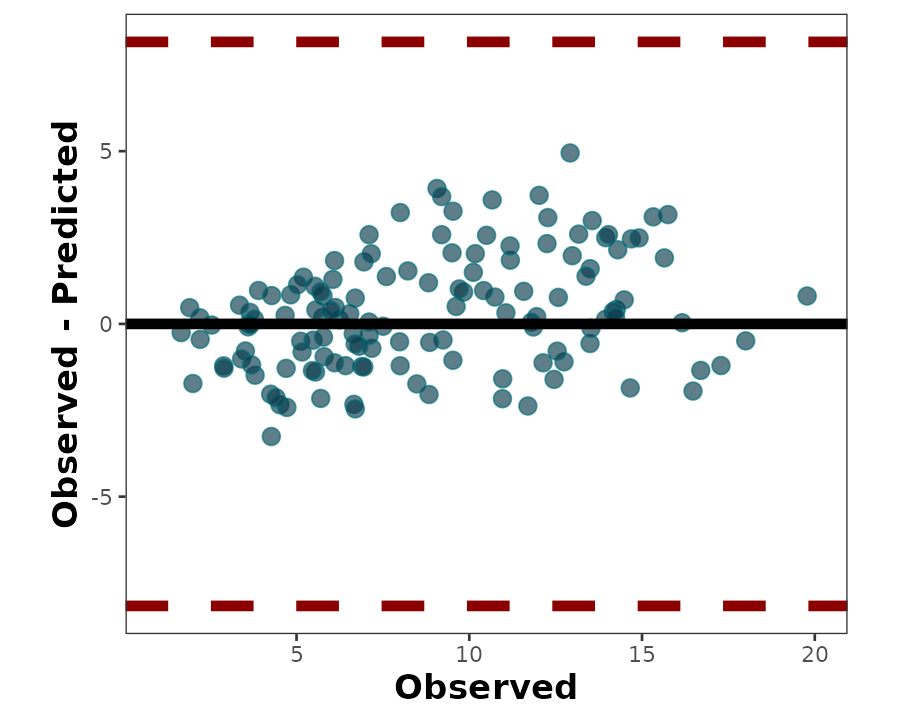
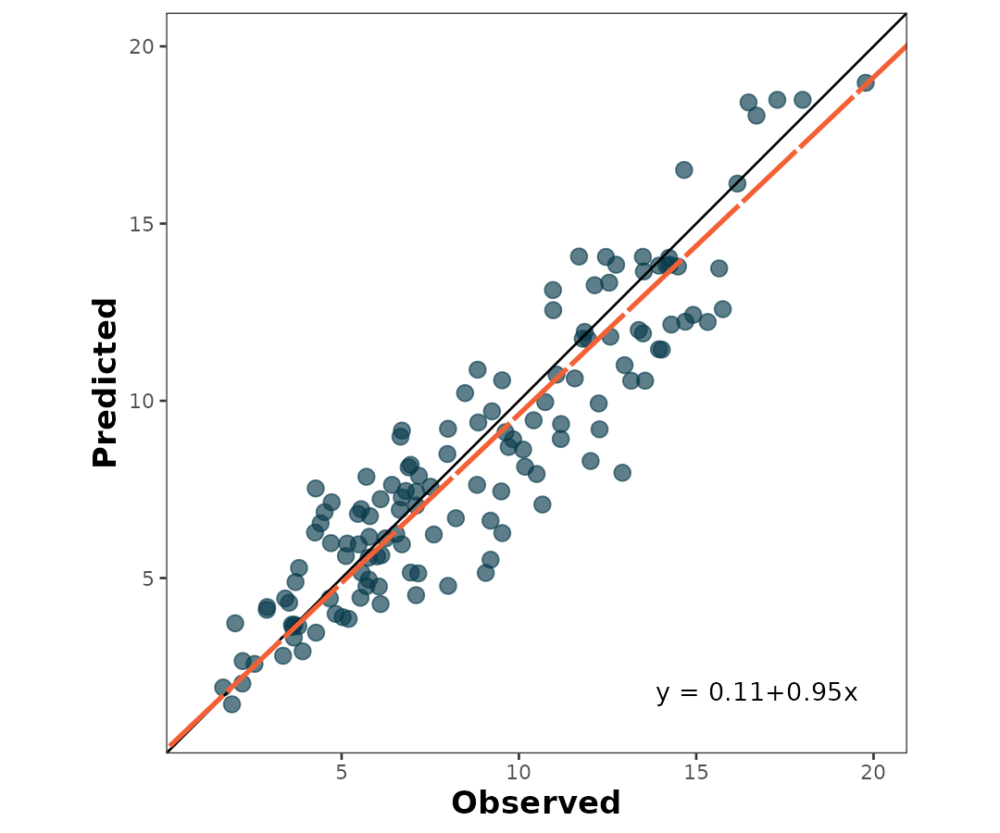
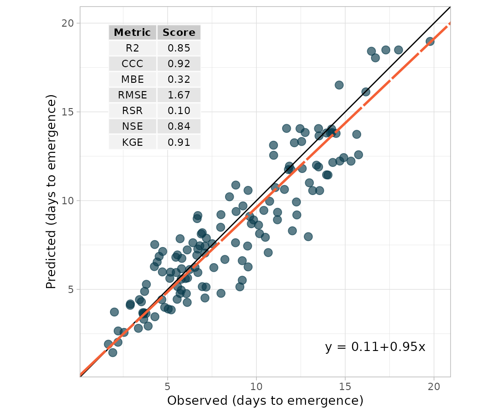

Assessing model agreement in wheat grain nitrogen content prediction - a use case
Leo Bastos & Adrian Correndo
2022-06-22
Source:vignettes/regression_case.Rmd
regression_case.Rmd1 Introduction
The metrica package was developed to visualize and compute the level of agreement between observed ground-truth values and model-derived (e.g., mechanistic or empirical) predictions.
This package is intended to fit into the following workflow:
- a data set containing the observed values is used to train a model
- the trained model is used to generate predictions
- a data frame containing at least the observed and model-predicted values is created
-
metricapackage is used to compute goodness of fit and error metrics based on observed and predicted values
-
metricapackage is used to visualize model fit and selected fit metrics
This vignette introduces the functionality of the metrica package applied to observed and model-predicted values of wheat grain nitrogen (N) content (in grams of N \(m^{-2}\)).
2 Wheat grain N content
Let’s begin by loading the packages needed.
Now we load the wheat data set included in the metrica package.
# Load
data(wheat)
# Printing first observations
head(wheat)
#> pred obs
#> 1 2.577314 2.544
#> 2 3.989590 4.831
#> 3 5.645253 6.121
#> 4 13.125101 10.960
#> 5 4.955917 5.767
#> 6 6.687800 8.222This data set contains two columns:
-
pred: model-predicted wheat grain N content, in g N \(m^{-2}\),
- obs: ground-truth observed wheat grain N content, in g N \(m^{-2}\)
3 Visual assessment of agreement
3.1 Scatterplot of pred vs. obs
The simplest way to visually assess agreement between observed and predicted values is with a scatterplot.
We can use the function scatter_plot() from the metrica package to create a scatterplot.
The function requires specifying at least:
- the data frame object name (
dataargument) - the name of the column containing observed values (
obsargument)
- the name of the column containing predicted values (
predargument)
Besides a scatterplot, this function also adds to the plot the 1:1 line (solid line) and the linear regression line (dashed line).
scatter_plot(data = wheat,
obs = obs,
pred = pred)
The default behavior of scatter_plot() places the obs column on the x axis and the pred column on the y axis (orientation = "PO"). This can be inverted by changing the argument orientation to “OP”:
scatter_plot(data = wheat,
obs = obs,
pred = pred,
orientation = "OP")
The output of the scatter_plot() function is a ggplot2 object that can be further customized:
scatter_plot(data = wheat,
obs = obs,
pred = pred,
orientation = "OP")+
labs(x ="Predicted wheat N content (g N/m2)",
y = "Observed wheat N content (g N/m2)")+
theme_dark()
3.2 Bland-Altman plot
The Bland-Altman plot is another way of visually assessing observed vs. predicted agreement. It plots the difference between observed and predicted values on the y axis, and the observed values on the x axis:
bland_altman_plot(data = wheat,
obs = obs,
pred = pred)
4 Numerical assessment of agreement
The metrica package contains functions for 41 metrics to assess agreement between observed and predicted values for continuous data (i.e., regression error).
A list with all the the metrics including their name, definition, details, formula, and function name, please check [here].
All of the metric functions take the same three arguments as the plotting functions:
- the data frame object name (
dataargument) - the name of the column containing observed values (
obsargument)
- the name of the column containing predicted values (
predargument)
The user can choose to calculate a single metric, or to calculate all metrics at once.
To calculate a single metric, the metric function can be called.
For example, to calculate \(R^{2}\), we can use the R2() function:
R2(data = wheat,
obs = obs,
pred = pred)
#> [1] 0.8455538Similarly, to calculate root mean squared error, we can use the RMSE() function:
RMSE(data = wheat,
obs = obs,
pred = pred)
#> [1] 1.666441The user can also calculate all 41 metrics at once using the function metrics_summary():
metrics_summary(data = wheat,
obs = obs,
pred = pred,
type = "regression")
#> Metric Score
#> 1 B0 1.131556e-01
#> 2 B1 9.505780e-01
#> 3 r 9.195400e-01
#> 4 R2 8.455538e-01
#> 5 Xa 9.956419e-01
#> 6 CCC 9.155325e-01
#> 7 MAE 1.327812e+00
#> 8 RMAE 1.521466e-01
#> 9 MAPE 1.751424e+01
#> 10 SMAPE 1.743518e+01
#> 11 RAE 3.715659e-01
#> 12 RSE 1.612887e-01
#> 13 MBE 3.181595e-01
#> 14 PBE 3.645615e+00
#> 15 PAB 3.645103e+00
#> 16 PPB 1.514388e+00
#> 17 MSE 2.777027e+00
#> 18 RMSE 1.666441e+00
#> 19 RRMSE 1.909483e-01
#> 20 RSR 9.678632e-02
#> 21 iqRMSE 2.523772e-01
#> 22 MLA 1.432804e-01
#> 23 MLP 2.633747e+00
#> 24 SB 1.012255e-01
#> 25 SDSD 4.205496e-02
#> 26 LCS 2.633747e+00
#> 27 PLA 5.159491e+00
#> 28 PLP 9.484051e+01
#> 29 Ue 9.484051e+01
#> 30 Uc 1.514388e+00
#> 31 Ub 3.645103e+00
#> 32 NSE 8.387113e-01
#> 33 E1 6.284341e-01
#> 34 Erel 7.705756e-01
#> 35 KGE 9.106471e-01
#> 36 d 9.563226e-01
#> 37 d1 8.064920e-01
#> 38 d1r -4.452856e+04
#> 39 RAC 9.577011e-01
#> 40 AC 8.417422e-01
#> 41 lambda 9.155325e-01
#> 42 dcorr 8.974794e-01
#> 43 MIC 7.894041e-01If the user wants just specific metrics, within the same function metrics_summary(), user can pass a list of desired metrics using the argument “metrics_list” as follows:
my.metrics <- c("R2","MBE", "RMSE", "RSR", "NSE", "KGE", "CCC")
metrics_summary(data = wheat,
obs = obs,
pred = pred,
type = "regression",
metrics_list = my.metrics)
#> Metric Score
#> 1 R2 0.84555376
#> 2 CCC 0.91553253
#> 3 MBE 0.31815953
#> 4 RMSE 1.66644142
#> 5 RSR 0.09678632
#> 6 NSE 0.83871126
#> 7 KGE 0.910647095 Visual and numerical assessment combined
The user can also create a scatter plot that includes not only the predicted vs. observed points, 1:1 line, and regression line, but also selected metrics and their values plus the SMA regression equation.
This is accomplished with the function scatter_plot():
scatter_plot(data = wheat,
obs = obs,
pred = pred)
To print the metrics on the scatter_plot(), just use print.metrics. Warning: do not forget to specify your ‘metrics.list’:
my.metrica.plot <- scatter_plot(data = wheat,
obs = obs,
pred = pred,
print_metrics = TRUE, metrics_list = my.metrics)
my.metrica.plot Also, as a ggplot element, outputs are flexible of further edition:
Also, as a ggplot element, outputs are flexible of further edition:
my.metrica.plot +
# Modify labels
labs(x = "Observed (days to emergence)", y = "Predicted (days to emergence)")+
# Modify theme
theme_light()
my.metrica.plot +
# Modify labels
labs(x = "Observed (Mg/ha)", y = "Predicted (Mg/ha)")+
# Modify theme
theme_dark()6 Exporting
To export the metrics summary table, the user can simply write it to file with the function write.csv():
metrics_summary(data = wheat,
obs = obs,
pred = pred) %>%
write.csv("metrics_summary.csv")Similarly, to export a plot, the user can simply write it to file with the function ggsave():
ggsave(plot = my.metrica.plot,
"scatter_metrics.png",
width = 5,
height = 5)